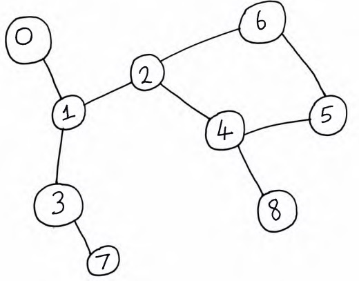

Depth-first search
Motivation
Depth-first search, commonly abbreviated as DFS, is an algorithm that's used to search through a graph. If you're unfamiliar with a graph, it's a data structure that represents a network of nodes optionally connected by lines called edges. A practical application is a social network like that used on your favourite social media site. It probably uses graphs to internally represent people (the nodes) and their connections to other people (the edges).
Fun fact: if you're in the UK and you google "DFS", you probably won't find anything about this algorithm on the first page of search results, because the DFS furniture company's search engine optimisation is so good. However, for our purposes, "DFS" refers to the algorithm at hand.
DFS fairly systematically explores the nodes and edges in a graph data structure. On its own, it's not particularly useful. But when it's combined with other algorithmic steps it can be used to do some pretty powerful things quite elegantly - for example:
- Generating mazes.
- Finding paths through mazes.
- Finding the strongly connected components in a directed graph.
- Solving a variety of other graph-related problems.
The main idea
Given a starting node in the graph, DFS selects one of the unvisited neighbours of the node (a neighbour node is a node that the starting node is connected to by an edge) and then does the same thing for the neighbour and so on until it reaches a node which doesn't have any unvisited neighbours. Then it backtracks and visits all the other unvisited neighbours of the nodes that it's visited so far.
An example will help to illustrate the point.
Consider the undirected graph above. Let's run DFS from the node labelled 0.
- The algorithm selects the only unvisited neighbour of 0, which is 1.
- Node 1 has two unvisited neighbours, 2 and 3. Suppose the algorithm chooses to explore 3 first.
- Node 3 has a single unvisited neighbour, 7.
- When exploring 7, the algorithm realises that it has no unvisited neighbours and backtracks to the last node with unvisited neighbours, which is 1.
- Node 2 is the next unvisited neighbour of 1. It has two unvisited neighbours, 6 and 4. Suppose 4 is chosen next.
- Node 4 also has two unvisited neighbours, 5 and 8. Suppose 8 is chosen next.
- Node 8 has no unvisited neighbours, so the algorithm backtracks to 4.
- Node 5 is the next unvisited neighbour of 4. It has one unvisited neighbour, node 6.
- Node 6 has no unvisited neighbours, so the algorithm backtracks all the way to starting node 0 and finishes running.
The order in which the nodes were visited is: 0, 1, 3, 7, 2, 4, 8, 5, 6.
This suggests a recursive implementation, but the implementation below is actually an iterative one. Iterative solutions can sometimes be faster than recursive ones, even though they might be more complex to code. They also tend to use less program call stack space than recursive solutions. Also, don't you just get a good feeling when you implement a recursive algorithm iteratively?
DFS code
In our iterative implementation of DFS, we'll use a stack to track the unvisited neighbours of a node.
First we'll define a helper Edge class which represents an edge
in the graph between two nodes.
One of the arguments to our DFS method is the graph, which we'll be representing as an
adjacency list. This is a list of lists.
The elements of the outer list represent nodes in the graph. Each element is itself a list of
Edges
which the corresponding node is a part of. Other graph representations we could use include an
adjacency matrix
and an edge list.
import java.util.List;
import java.util.Stack;
public class DFS {
private static class Edge {
private int fromNode, toNode;
public Edge(int fromNode, int toNode) {
this.fromNode = fromNode;
this.toNode = toNode;
}
}
}Next, we'll implement the actual DFS algorithm. As well as the graph, it takes in the start node.
public void dfs(List<List<Edge>> graph, int start) {
Stack<Integer> stack = new Stack<>();
stack.push(start);
boolean[] visited = new boolean[graph.size()];
visited[start] = true;
int node;
while (!stack.isEmpty()) {
node = stack.pop();
for (Edge edge : graph.get(node)) {
if (!visited[edge.toNode]) {
stack.push(edge.toNode);
visited[edge.toNode] = true;
}
}
}
}Complexity analysis
What's the time complexity of DFS? Let's suppose that the lines before the
while loop take constant time. Then the real work
happens in the while loop. How many times will this loop
execute? Well, in the worst, case, each node in the graph is reachable by a path of edges
from the start node. And, since each reachable node is pushed onto the stack exactly once,
this while loop will
execute times, where
is the number of nodes, or "vertices", in the graph.
If we look closely, we see that the body of the for loop
will be executed exactly times, where
is the number of edges in the graph.
So we pop a node off the stack exactly times and we execute the
for loop
body times. This gives us a running time of
.
How about space? The space complexity depends on how we represent the graph. In this case, we use an adjacency list. The outer list stores the vertices and the total number of elements across all the inner lists is the number of edges, . So the space complexity is also .
Key takeaways
We've seen that DFS is a common graph-search algorithm that is used to traverse the nodes and edges in a graph. On its own, it's not the most useful algorithm, but it can be used in combination with other algorithms to solve a variety of problems. Its running time and space complexity when the graph is represented as an adjacency list are both .